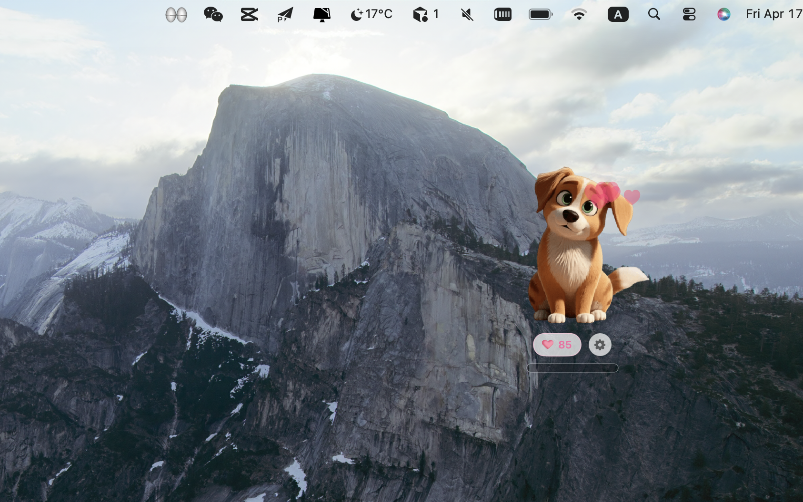

How It Started
PetBar started from my own experience. Like many pet parents, after losing a dog who had been with me for years, I wanted to keep a piece of her in a place I open every day. So I kept refining the idea until she became a desktop pet widget on my Mac. That feeling of turning on the screen and sensing she is still somehow there convinced me this emotion deserves to be treated with care.
For memorial and companionship requests, I choose a softer, stylized look by default. It keeps the expression and details you know, while creating just enough emotional distance from painful realism. The goal is not to make them look different, but to leave space for your heart: you still recognize them instantly, without reliving the hardest moment each time you look.

Many of these stories begin after a goodbye.

Dafu · Golden Retriever

Mili · Maltese

Mochi · Netherland Dwarf Rabbit

Qiqi · Golden Retriever

Doudou · Border Collie

Tuanzi · Corgi

Lucky · Shiba Inu

Naitang · Samoyed
After she passed, I could not open her photos often, but I could not delete them either. Turning her into a widget made every screen wake-up feel like she was still sitting nearby, not as a sharp reminder, but as quiet company.
What I miss most is that little white patch on her profile and her half-squinting eyes. I hoped those details could stay, so when I open PetBar, I instantly know it is our dog.
I cannot keep another pet right now, but I wanted a gentle way to carry the memory into everyday life. The widget feels like a small memorial corner that helps me steady myself on hard days.
We kept her leash at home, but rarely talked about her. After making a stylized widget, my mom started sharing stories again, like sadness was slowly turning into something we could remember together.
Because of a work relocation, my dog is temporarily staying with family in another city. Watching only camera feeds felt distant; the custom widget made daily life feel connected again while waiting to reunite.
At first I wanted maximum realism, but then realized it was too painful to look at. A softer stylized version still kept her expression recognizable, without pulling me back into the sharpest grief each time.
Before moving home after graduation, I left my dog with a close friend. I was afraid my days would suddenly feel empty. The widget became a small daily signal: he is still out there living well, and I can keep moving forward too.
Our child kept asking where she went. The gentle stylized widget helped us say that love can stay without constant tears. Now our kid says hello to the widget every day; it feels like a kinder way to say goodbye.
Why Heartfelt Customization + Stylized Art
A practical pain point came first
This product began with a simple frustration: there was no reliable, easy way to bring your own pet into a polished everyday product. We wanted to fill that gap, so your pet can live beyond the photo album and stay present in your daily rhythm.
Stylization creates emotional breathing room
You may still want their company in everyday life, but pure realism can feel too heavy. Stylized art is not about losing likeness; it is about preserving recognition while softening the emotional impact, so remembrance can feel gentler and more sustainable.
Recognition still matters
Within softer shapes, we still prioritize the familiar markers you know by heart, such as coat patterns, eye shape, and body proportions. It should feel like a quiet greeting, not an emotional shock.